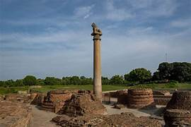

Vishwa Shanti Stupa is a peace pagoda located near Vishali Museum in Vaishali, Bihar. Also known as World Peace Pagoda, it is one of the Peace Pagodas in India, and among the most-visited tourist places in Vaishali. The Vishwa Shanti Stupa or World Peace Pagoda was built by the collaboration of the Indian & Japanese Government in 1969. The peace Pagoda spread in ten acres was constructed under the wish of Fujii Guruji, a Japanese Buddhist. Also known as the pillar of the piece in Vaishali, it is one of the 80 stupas around the world dedicated to Buddhism.

Buddha's Relic Stupa is a sacred spot located at Chak Ramdas in the Vaishali district of Bihar. Situated near Vaishali Museum, it is one of the prominent historical structures in Bihar, and among the best places to visit in Vaishali. There are two stupas, Stupa 1 and Stupa 2 which are named based on their discovery and excavation. Both of them have the ashes of Lord Buddha preserved in stone caskets. Situated near the Coronation Tank or Abhishek Pushkarini, the Stupa 1 or the Relic Stupa was excavated by Dr. A.S.Altekar in 1985, and inside, a stone casket was found containing some ashes and 'Manka'. That casket is now with the Patna Museum
Ashoka Pillar is a historical monument located at Kolhua in Vaishali, Bihar. Situated inside the Vaishali Archaeological Ruins complex, it is one of the popular places of heritage in Bihar, and among the must include places in Vaishali Tour Packages. Also called as the Lion Pillar, the Ashoka Pillar at Vaishali was erected by King Ashoka in 3rd century BC after being victorious on Kalinga. Influenced by Greco Buddhist style, this 18.3 m high pillar is made of a highly polished single piece of red sandstone, surmounted by a bell-shaped capital. A life-size figure of a lion is placed on top of the pillar facing north, believed to be the direction of Lord Buddha's last voyage. Generally, the pillars bear inscriptions by King Ashoka, but the one in Vaishali does not contain any such inscriptions. Unlike other Ashokan Pillars, the pillar at Vaishali bears only one old lion carved in a seated position a the top that signifies the end of the warrior inside King Ashoka and his new beginning as a Buddhist.

Near the coronation tank is Stupa 1 or the Relic Stupa. Here the Licchavis reverentially encased one of the eight portions of the Master's relics, which they received after the Mahaparinirvana. After his last discourse the Buddha set out for Kushinagar, but the Licchavis kept following him. The Buddha gave them his alms bowl but they still refused to return. He then created an illusion of a river in spate which compelled them to go back. This site can be identified with Deora in modern Kesariya village, where Ashoka later built a stupa.